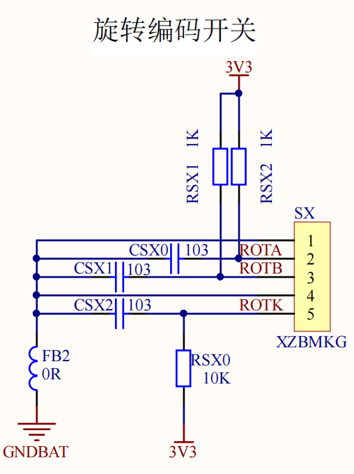
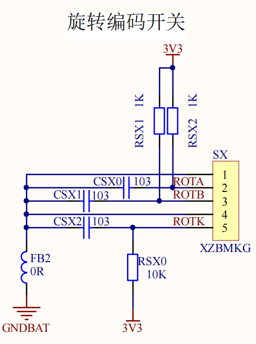

猫巾的博客
猫巾的博客
有关MSP432旋转编码开关的函数库及头文件声明:exinadjust.c exinadjust.h。
2型板为例，旋转编码开关的电路如下图，其中ROTA为A相对应引脚为P4.6，ROTB为B相对应引脚为P3.5，ROTK为中间按键引脚对应P3.7。

相关重要函数说明：

旋转编码开关使用说明
有关MSP432旋转编码开关的函数库及头文件声明:exinadjust.c exinadjust.h。
2型板为例，旋转编码开关的电路如下图，其中ROTA为A相对应引脚为P4.6，ROTB为B相对应引脚为P3.5，ROTK为中间按键引脚对应P3.7。

相关重要函数说明：
1.旋转编码开关初始化
2.调参函数。
3.调参UI界面。
4.应用举例。
实现UI界面显示并且顺时针旋转编码开关参数减小，逆时针旋转参数增加，可通过按下旋转编码开关来选择参数。
2022年1月创 于 Github管理
http://hihii11.github.io/GWJ_BLOG.html
@猫巾